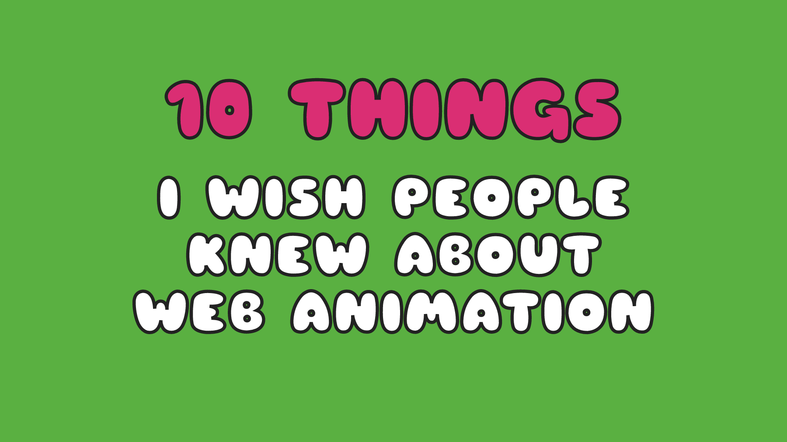
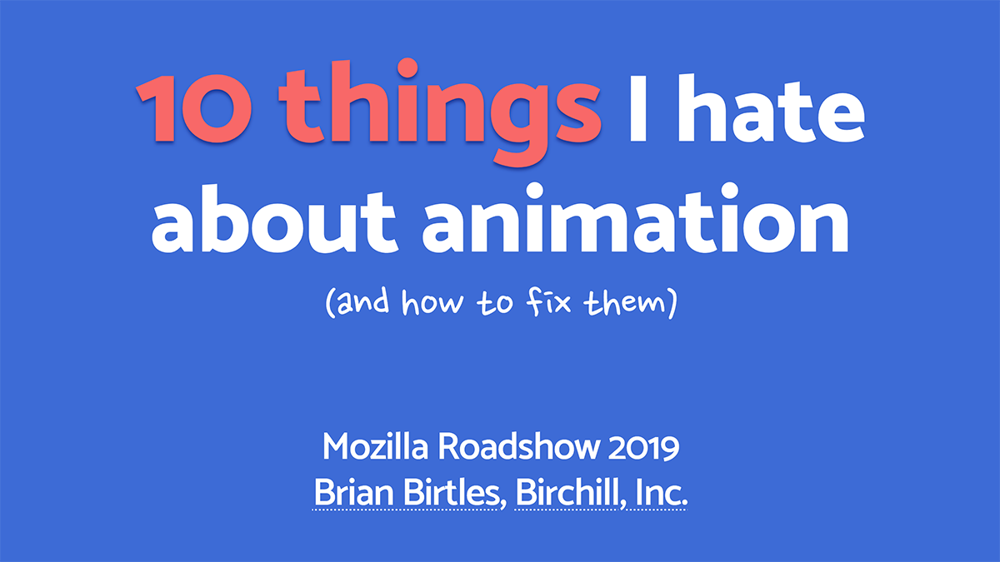
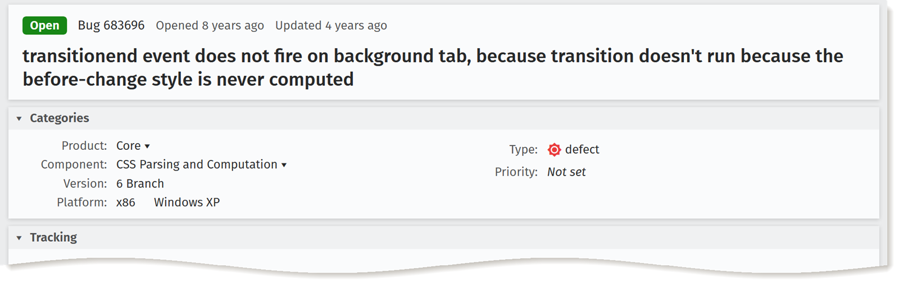
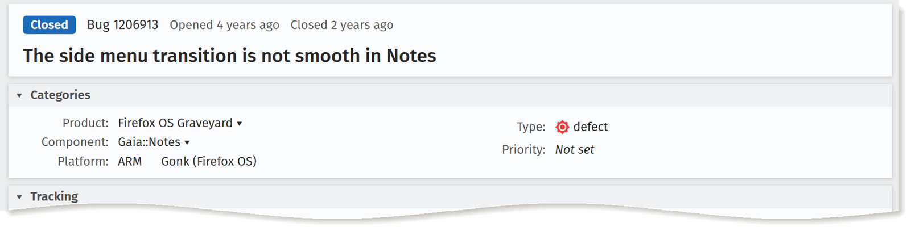
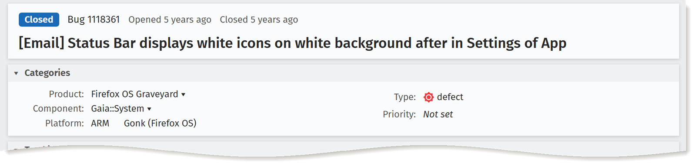
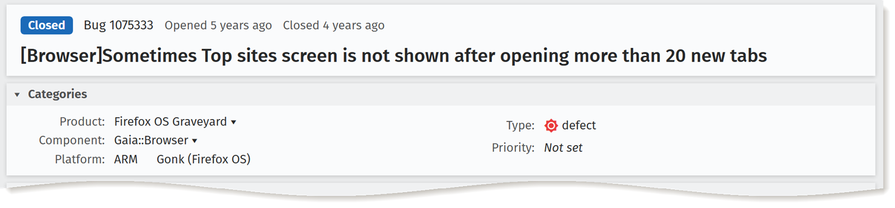
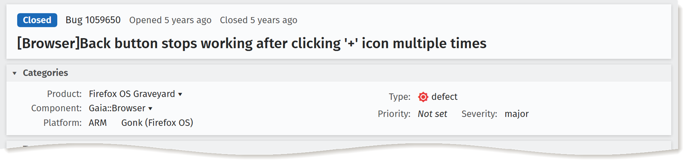

自己紹介

とは…
- 株式会社Birchill
- 令和元年6月設立
- 全員元Mozilla Firefoxエンジニア
- 現在に至るまでブラウザー開発
- C++, Rust, JS
- Webアプリの開発
- TypeScript, React/Preact, Redux, PouchDB
- Tailwind CSS
以前…
-  10 things I wish people knew about Web animation birtles.github.io/cssconf2019/ CSSConf 2019 深セン 2019-03-30
-

アニメーションについて嫌いな10個
birtles.github.io/mozdev2019/
MDN Developer Roadshow
東京、ソール
2019-11-11, 2019-11-13
PWA開発者の知るべき
アニメーションの5個
① CSS Transitionを発生させるため、「スタイルの変更」
button.onclick = () => {
// パネルを作る
const panel = document.createElement('div');
panel.classList.add('panel');
panel.textContent = 'ハロー！';
parent.appendChild(panel);
// アニメーションさせる
panel.style.transform = 'scale(0)';
panel.style.transition = 'transform .5s';
panel.style.transform = 'scale(1)';
};
- opacityの変更 0 → 1 !
- transition-property に opacity が含まれており…
- 対応するtransition-duration
+transition-delay>0s… - ⇒ transitionを生成する！🎉
button.onclick = () => {
const panel = document.createElement('div');
...
panel.style.transform = 'scale(0)';
panel.style.transition = 'transform .5s';
panel.style.transform = 'scale(1)';
};
- transform は scale(1).
- 前回の transform は... ない.
button.onclick = () => {
// パネルを作る
const panel = document.createElement('div');
...
// アニメーションさせる
panel.style.transform = 'scale(0)';
panel.style.transition = 'transform .5s';
requestAnimationFrame(() => {
panel.style.transform = 'scale(1)';
});
};
button.onclick = () => {
const panel = document.createElement('div');
...
panel.style.transform = 'scale(0)';
requestAnimationFrame(() => {
panel.style.transform = 'scale(1)';
});
};
- transform は scale(1).
- 前回の transform は... まだない.
button.onclick = () => {
// パネルを作る
const panel = document.createElement('div');
...
// アニメーションさせる
panel.style.transform = 'scale(0)';
panel.style.transition = 'transform .5s';
requestAnimationFrame(() => {
requestAnimationFrame(() => {
panel.style.transform = 'scale(1)';
});
});
};
button.onclick = () => {
...
panel.style.transform = 'scale(0)';
requestAnimationFrame(() => {
requestAnimationFrame(() => {
panel.style.transform = 'scale(1)';
});
});
};
- transform は scale(1).
- 前回の transform は scale(0).
- ⇒ transitionを生成する！🎉
button.onclick = () => {
// パネルを作る
const panel = document.createElement('div');
...
// アニメーションさせる
panel.style.transform = 'scale(0)';
getComputedStyle(panel).transform;
panel.style.transition = 'transform .5s';
panel.style.transform = 'scale(1)';
};
button.onclick = () => {
const panel = document.createElement('div');
...
panel.style.transform = 'scale(0)';
getComputedStyle(panel).transform;
panel.style.transition = 'transform .5s';
panel.style.transform = 'scale(1)';
};
- transform は scale(1).
- 前回の transform は scale(0).
- → transitionを生成する！🎉
注意点
- 以下の場合は計算されたスタイルはない…
createElementの直後display: none
getComputedStyle(elem)だけだと、スタイルの算出は走らない！❌- →
getComputedStyle(elem).<property>👍
- →
- 場合によっては
getComputedStyleは重い
const PopupButton = () => {
const [isShowing, setIsShowing] = React.useState(false);
const panelRef = React.useRef(null);
React.useLayoutEffect(() => {
panelRef.current.style.transform = 'scale(1)';
}, [isShowing, panelRef.current]);
const buttonClick = React.useCallback(() => {
setIsShowing(!isShowing);
}, [isShowing]);
return (<>
<button onClick={buttonClick} />
{isShowing ? (
<div ref={panelRef}
style={{ transition: 'transform .5s', transform: 'scale(0)' }}>
ハロー！
</div>
) : null}
</>);
};
const PopupButton = () => {
const [isShowing, setIsShowing] = React.useState(false);
const panelRef = React.useRef(null);
React.useLayoutEffect(() => {
getComputedStyle(panelRef.current).transform;
panelRef.current.style.transform = 'scale(1)';
}, [isShowing, panelRef.current]);
const buttonClick = React.useCallback(() => {
setIsShowing(!isShowing);
}, [isShowing]);
return (<>
<button onClick={buttonClick} />
{isShowing ? (
<div ref={panelRef}
style={{ transition: 'transform .5s', transform: 'scale(0)' }}>
ハロー！
</div>
) : null}
</>);
};
② CSS Transitionsに
終わらないこともある
button.onclick = () => {
// … パネルが表示されていれば、削除する。
panel.remove();
};
button.onclick = () => {
// … パネルが表示されていれば、削除する。
panel.style.transform = 'scale(0)';
panel.addEventListener('transitionend', () => {
panel.remove();
});
};
もしtransitionの再生中に…
- 要素が
display:noneになったら？ - 要素が再生成されたら？
transition-propertyの計算値が変わったら？- 要素が削除されたら？
transitionはキャンセルされて
transitionend は発火されない！





1) Transitionが生成されていない
2) Transitionが終わらない
//...
const buttonClick = React.useCallback(() => {
if (panelState === 'showing') {
setPanelState('hiding');
panelRef.current.addEventListener('transitionend', () => {
setPanelState('hidden');
}, { once: true });
} else {
setPanelState('showing');
}
}, [panelState]);
// ...
新しいイベント！
transitionrun→ transitionが生成された 🆕
→
transitionendを待ってもオッケー 🙆♂️transitioncancel→ 要素が消えた🗑️ （削除されたり、再生成されたり、
display:noneになったり）→
transitionendを待たない方が良い ❌animationcancel（transitioncancelと同様）
transitioncancelたち
 53+
53+
 74+
No
74+
No animationcancel Tech Preview
Tech Preview
- 〇
No
animationcancel
③ Web Animations API
を使ってみて
Animation.finished
React.useLayoutEffect(() => {
let animation;
if (panelState === 'showing') {
animation = panelRef.current.animate(
{ transform: ['scale(0)', 'scale(1)'] },
{ duration: 500, easing: 'ease' }
);
} else if (panelState === 'hiding') {
animation = panelRef.current.animate(
{ transform: ['scale(1)', 'scale(0)'] },
{ duration: 500, easing: 'ease' }
);
// animationがキャンセルされたらfinishedがrejectされる
animation.finished.then(() => {
setPanelState('hidden');
});
}
return () => {
if (animation) { animation.cancel() }
};
}, [panelState, panelRef.current]);
CSS Transitions ♡ Web Animations
// transitionend
button.onclick = () => {
panel.style.transform = 'scale(0)';
panel.addEventListener('transitionend', () => {
panel.remove();
});
};
// Web Animationsのfinished Promise
button.onclick = () => {
panel.style.transform = 'scale(0)';
const transition = panel.getAnimations()[0];
transition.finished.then(() => {
panel.remove();
});
});
rgb(255, 0, 0)
→
rgb(128, 64, 0)
→
rgb(0, 128, 0)
😧
hsl(0, 100%, 50%)
→
hsl(60, 100%, 37.5%)
→
hsl(120, 100%, 25%)
❓
CSSTransition.setKeyframes()
document.addEventListener('transitionrun', evt => {
if (evt.propertyName !== 'fill') {
return;
}
const transition = evt.target
.getAnimations()
.find(animation => animation.transitionProperty === 'fill');
const keyframes = transition.effect.getKeyframes();
const hslKeyframes = generateHslKeyframes(
keyframes[0].fill,
keyframes[1].fill
);
transition.effect.setKeyframes(hslKeyframes);
});
Web Animations
| Element.animate() | 48+ | 36+ | 3月？ |
| getAnimations() | Nightly, 75+ | Canary, 4月？ | 3月？ |
おまけアニメーションできる
ようにDOMを常備する
Single page apps
react.render(
<Router>
<Route exact path="/" component={Photos} />
<Route path="/polls" component={Polls} />
<Route path="/finder" component={Finder} />
</Router>
);
Single page apps
<Router>
<Route render={({ location }) => (
<TransitionGroup>
<CSSTransition key={location.pathname}
timeout={400} classNames="slide">
<Switch location={location}>
<Route exact path="/" component={Photos} />
<Route path="/polls" component={Polls} />
<Route path="/finder" component={Finder} />
</Switch>
</CSSTransition>
</TransitionGroup>
)}/>
</Router>
When you click…
- Handle click
- Create DOM elements
- Resolve style
- (
<CSSTransition>resolves style and layout multiple times)
- (
- Calculate layout
- Paint each new element
- Run the transition
What about…
<Router>
<Route render={({ location }) => (
<Photos active={location.pathname === '/'}/>
<Polls active={location.pathname === '/stories'}/>
<Finder active={location.pathname === '/notes'}/>
)}/>
</Router>
When you click…
- Handle click
- Create DOM elements
- Resolve style
- (
<CSSTransition>resolves style and layout multiple times)
- (
- Calculate layout
- Paint each new element
- Run the transition